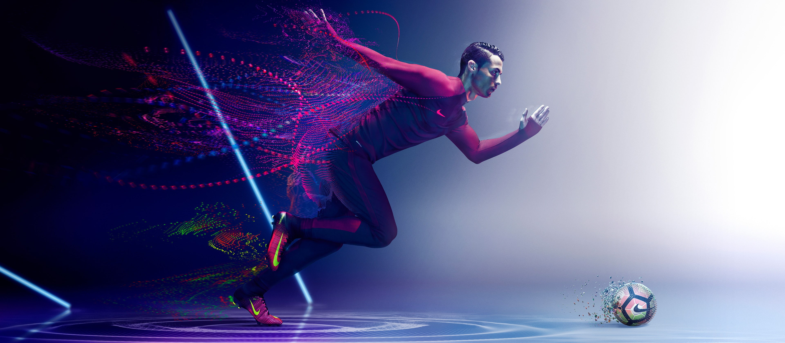
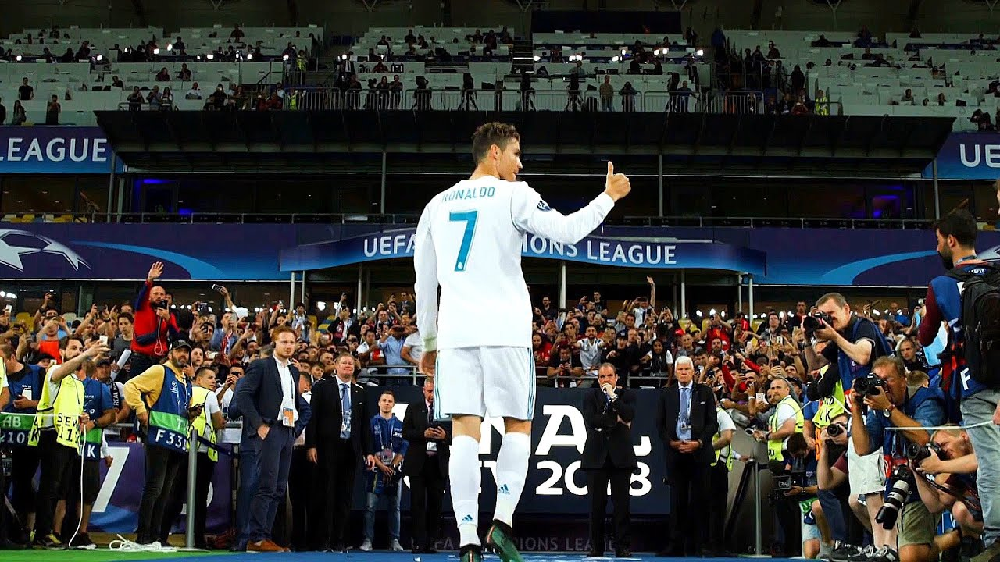

Portugal · 2001 — Present
A five-chapter look at twenty-two years at the top of the game — the rise, the peak, the injury, the second wind, and the long farewell. Told without the fandom, without the takedown.

What follows isn’t a defence and isn’t a takedown. It’s a chapter-by-chapter look at a career that reshaped what a footballer could still do at 30, 35, and 40 — and at the moments that shaped him too.
Numbers are drawn from public match records at the time of writing. Where a claim is contested, it’s framed as such.
Cristiano Ronaldo signed for Sporting Lisbon’s academy at twelve and made the crossing on his own. Teachers there later remembered a small boy who kept a picture of his mother on his desk. He debuted for Sporting’s first team as a 17-year-old in October 2002. In August 2003, in a pre-season friendly at the Estádio José Alvalade, he took Manchester United’s defenders apart badly enough that Sir Alex Ferguson, watching from the away dugout, agreed to buy him on the flight home.
The player who arrived at Old Trafford at eighteen was not the one who left it. Early Ronaldo was a stepover merchant — quick, flashy, decorated with tricks that did not always end in a shot, a cross, or a pass. Ruud van Nistelrooy, the club’s senior finisher whose game demanded that the ball arrive in the box, is generally identified as the loudest of the dressing-room voices. In different retellings the frustration is the same: Ronaldo would rather beat his man three times than release the ball. A training-ground argument between the two, later described by several teammates, turned personal in the months after Ronaldo’s father José Dinis died in September 2005. Van Nistelrooy left for Real Madrid the following summer.
Homesickness ran alongside all of it. He was eighteen, living far from his family, in a country whose weather, food and press he was not built for, learning the language on the job. By his own later admission he cried more in his first English winter than he ever expected to. The football he could at least work on. He worked on it obsessively — extra gym, extra finishing drills, a body he began to reshape season by season.
The turn came in 2006—07. Ferguson, who had defended him publicly through the World Cup wink incident and the trophy-less early seasons, moved him inside, gave him a free role behind the strikers, and told him to shoot on sight. The tricks stayed. The end product stopped being optional. In 2007—08 he scored 42 goals in 49 appearances across all competitions — a figure no United winger had reached in modern memory. The Premier League title arrived. The Champions League followed in May.
The final in Moscow, against Chelsea, is the moment the transition became irreversible. He rose above Michael Essien to head United in front after 26 minutes. Lampard equalised on the stroke of half time. Extra time settled nothing. In the penalty shootout, with his stuttering, hop-and-hold run-up, he paused, struck the ball low to Petr Čech’s right, and saw it saved. He walked back to the halfway line convinced he had cost his team the trophy. John Terry then slipped on the shot that would have won it for Chelsea; Nicolas Anelka’s was saved; United took it 6—5. Ronaldo was filmed sobbing on the sodden turf, and then euphoric a minute later. The two states, roughly a minute apart, tell the whole chapter.
The same season delivered the goal that won the inaugural FIFA Puskás Award — a swerving right-footed strike from beyond forty yards, away at Porto, in the Champions League quarter-final. In December 2008 he collected the Ballon d’Or, at twenty-three. Nine months later he left Manchester for Real Madrid for a world-record £80 million. The trickster had gone; a Ballon d’Or winner had left in his place.
The season that ended the argument. He never again finished a full campaign as a peripheral talent.
He arrived in the summer of 2009 at twenty-four, on a €94 million transfer that broke his own world record from six years earlier. Real Madrid were rebuilding after the failed second Galácticos project. The brief was straightforward: score enough goals to bring back the Champions League. He would spend the next nine seasons doing exactly that.
Nothing about how Ronaldo trained at Madrid was normal. Teammates from that era — Marcelo, Fabio Coentrão, Pepe, Sergio Ramos in later interviews — describe the same picture: first onto the pitch, last off it, gym work before training and gym work after training, six small meals a day, sleep taken in staged naps, cryotherapy sessions when the body needed resetting. His measured body-fat percentage in his early thirties was reportedly closer to a decathlete’s than a professional footballer’s. The extremes read strangely from outside; inside they were the reason for what followed.
The front three was completed in September 2013, when Madrid signed Gareth Bale for €100 million and broke Ronaldo’s transfer record. With Karim Benzema between them, the “BBC” — Bale, Benzema, Cristiano — became the most productive attacking trio of the decade. Benzema was the unselfish link, sacrificing his own numbers to feed the two runners either side; Bale supplied pace and power on the right; Ronaldo finished from the left half-space. Whatever the modern reappraisal of Benzema’s individual gifts, both wingers said at the time, and continued to say afterwards, that they scored what they scored because of him.
Within-trio combinations only
Only goals scored from a pass by one of the other two, across five seasons together (2013-14 — 2017-18). Roughly 85 goals came from within-trio combinations. Benzema was the connector; Cristiano was the top receiver. Public per-pair data varies between sources — figures cross-referenced from Opta/Squawka-era reporting and rounded.
The tenth European Cup, La Décima, arrived in Lisbon in May 2014, when Sergio Ramos’s 93rd-minute equaliser dragged a losing final into extra time against Atlético Madrid; Ronaldo scored the fourth in the 4-1 rout that followed. What is unique in the current format of the tournament, though, is what came next. When Zinedine Zidane took over as head coach in January 2016, Madrid won the Champions League that season, and the one after, and the one after that. Atlético again in Milan in 2016 on penalties, Ronaldo scoring the decisive kick. Juventus in Cardiff in 2017, a brace in the 4-1 final. Liverpool in Kyiv in 2018, where Bale’s overhead kick took the night but Ronaldo top-scored the whole campaign with 15 — including his own overhead in the quarter-final second leg away at Juventus, applauded by the Turin crowd on its way in. No club has won three straight in the tournament in its current form. That team did.
The full ledger is difficult to compress. 450 goals in 438 appearances across all competitions. Five consecutive seasons of 50-plus goals between 2010-11 and 2014-15. Four Ballon d’Or awards won in Madrid (2013, 2014, 2016, 2017), added to the Manchester one. Two La Liga titles — including 2011-12, when José Mourinho’s side broke the Guardiola-era Barcelona with a record 100 points, of which Ronaldo contributed 46 goals. Two Copa del Rey wins. Real Madrid’s all-time top scorer, in nine seasons, at a club that had waited a century for the record.
The departure in July 2018 was quicker and cooler than the numbers suggested it would be. Reports of a contract dispute with club president Florentino Pérez, and a sense inside Ronaldo’s camp that the public recognition from the club did not match the output, produced a €100 million move to Juventus almost the day the season’s celebrations finished. The chapter closed with a European three-peat, a fifth Ballon d’Or for the outgoing player, and a club that would take another four seasons to recover its European stride.
The match was the 1-1 La Liga draw away at Real Valladolid on 7 May 2014, seventeen days before the Champions League final and six weeks before the World Cup in Brazil. Ronaldo was withdrawn in the second half with the left knee stiff. Real Madrid’s medical staff had been managing the same joint for months. Patellar tendinopathy — chronic inflammation and micro-tearing of the tendon that connects the kneecap to the shin — became the accepted diagnosis, and it stayed the diagnosis.
Patellar tendinopathy is not the kind of injury that appears on an X-ray in a way most supporters would recognise. It is an overuse condition, common in jumpers and sprinters, that responds to load management and rest rather than a single surgical fix. Ronaldo’s version was manageable — he never missed a full season to it — but it was chronic. The extra gym work that had built the Manchester and early-Madrid body could not, past a certain point, keep pushing the same knee through the same volume of high-intensity actions. Something in his game had to give.
The visible change came gradually between 2014 and 2016. He walked in from the left touchline. He stopped attempting the through-a-defender surges that had once defined him and started arriving instead at the back post, at the near post, at the six-yard box on cutbacks. His first touch became more about setting the shot than beating a man. The dribble count fell. The finish count did not.
“I’m different now, I’m more a penalty-box player, not so much on the wing, because you score more goals from there so I changed my position slightly.”
— Cristiano Ronaldo, in interview with MarcaBetween the 2013-14 season (his last as a functionally two-way winger) and the 2016-17 season (his first as a fully realigned central forward), publicly tracked figures showed his high-speed sprint count per 90 minutes drop noticeably, his touches per game drop, his share of goals scored inside the six-yard box rise, and his aerial duel win-rate rise. The physical body that had once been used to run past centre-backs was being used to out-jump them.
The redesign accelerated under Zinedine Zidane, who took the head coach’s job in January 2016. Zidane had been a very different kind of player, but he understood how to manage an ageing star; the deal, in effect, was fewer minutes in La Liga so that the knee held together for the Champions League. Ronaldo was rested at weekends more often, played the biggest European nights at full intensity, and produced the highest per-90 output of his life on the way to three consecutive UCL trophies.
It is the least glamorous chapter of the story and, for what came after it, arguably the most consequential. Without the transition, none of the post-30 numbers happen: no Euro 2016, no Nations League, no Serie A titles, no Al Nassr chase for a career-thousand. The Ronaldo who left Valladolid on 7 May 2014 was no longer the player who had left Manchester five years earlier. He would score more goals as the second version than he had as the first.
He turned 30 in February 2015, the age at which almost every elite forward begins the descent. For a stretch, it looked like he was one of them. What followed instead — after a public sag, a new manager and a settled tactical role — was the second half of a career that would look, on the numbers, like the first one. He became an out-and-out striker.
The reinvention did not look inevitable in the middle of it. The first half of the 2015-16 season, under Rafael Benítez, was the closest Ronaldo has come to a public sag. His shot volume fell, his per-game scoring rate slid to a level he had not lived at in Spain, and his body language on the pitch — hands on hips, arms out to teammates — was read across the football press as a player finally slowing down. Real Madrid lost 4-0 at home to Barcelona on 21 November 2015. Two months of "washed", "past it" and "in decline" pieces followed. Benítez was sacked in the first week of January 2016. Zinedine Zidane took the job the same day. The reinvention resumed.
The reinvention had begun in the seasons after Valladolid; the years that followed made it total. He was no longer a winger cutting inside. He was a central number nine, staying between the width of the six-yard box, arriving late from blind spots on crosses, timing runs onto through balls, finishing headers from set pieces. His touch to set up the shot became quicker. The shot itself came from closer to goal. The dribble count kept dropping; the finish count did not.
The output that followed is the reason the numbers side of the story is unusual. Before his thirtieth birthday, Ronaldo had scored around 463 goals for club and country. He has scored a comparable total in the decade since — enough that, by his mid-thirties, his post-30 tally sat close to, and by some counts above, his pre-30 tally. Very few players in the modern professional era have crossed that line. Fewer still have done it while keeping the per-season rate at his level.
The move to Juventus in July 2018, at 33 and for €100 million, was treated in Italy as a coup and in Spain as a sign of decline. Serie A had a long defensive tradition; visiting superstars had historically arrived and gradually diminished into it. Ronaldo produced 101 goals in 134 appearances across three seasons, won back-to-back Scudetti in his first two years, and took the Serie A top-scorer prize — the Capocannoniere — in 2020-21 with 29 league goals at 36. The Champions League he had been signed to deliver did not arrive; Juventus went out in the round of 16 in each of his three seasons. But the individual output, in the league most likely to muffle a scorer at that age, did not diminish.
The question underneath all of it — could a player rebuild a career around finishing after his running had been taken from him? — was answered several times over. He left Juventus in August 2021 with a full second decade of goals behind him, a Serie A top-scorer prize collected at 36, and a per-season output no other player in his mid-thirties in the modern game had matched. Whatever came after was a coda to a case that had already been made.
The return to Manchester United in August 2021 was framed as a homecoming. It ended fifteen months later in a mutual, public departure after a critical television interview. Between the two dates the goals were still there — 27 in his first season back — but the team around him got worse, and the fit between an older, more static forward and the pressing football the modern Premier League had moved to was harder to disguise.
In January 2023 he signed for Al Nassr in Riyadh, becoming the first major European star to move to the Saudi Pro League in its current, well-funded form. The debate about what that meant — sporting choice, financial one, sportswashing, or all three — is a conversation about football politics, not about his output. On the pitch he has kept scoring at a rate most players in their late 30s do not.
His international role has narrowed but not ended. He remains Portugal’s captain and, publicly at least, is chasing what would be a first for the sport: a career total of 1,000 competitive goals. Whether he reaches it is the last open question of the story.
Whatever happens, the era of the two-player rivalry that defined mid-2000s to late-2010s football closes when he stops. What replaces it is somebody else’s story.

Cristiano Ronaldo is an inspiration for young boys everywhere — to work hard, to chase their dreams, to be confident when nobody else is confident in them yet.
He might not be the GOAT in every conversation. That’s fine. What he will be remembered for is his work ethic, his determination, and his ability to keep adapting — through the injury, through the country he was in at any given point in his career, through every era of the game that told him he was finished. That, in the end, is the part worth taking with you.